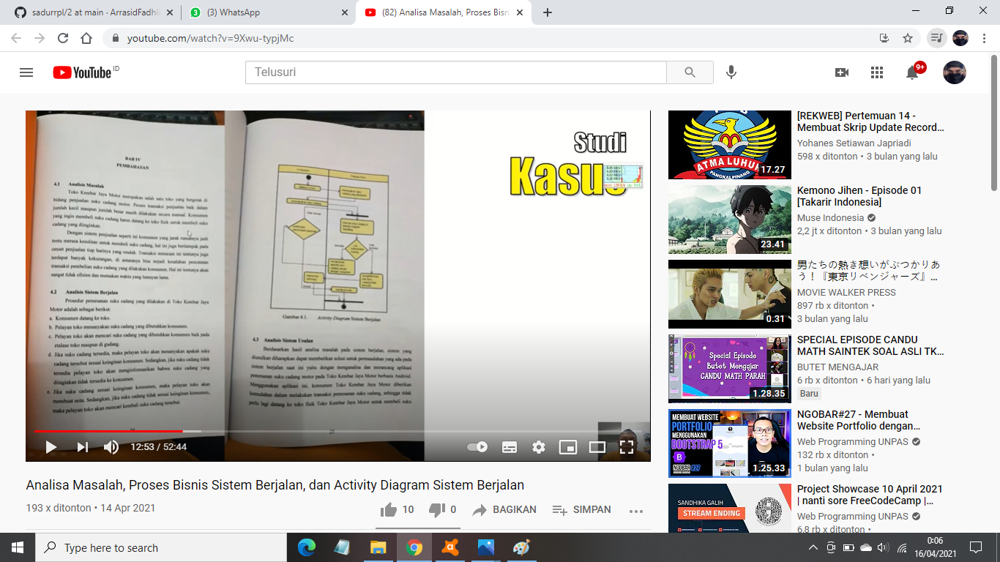
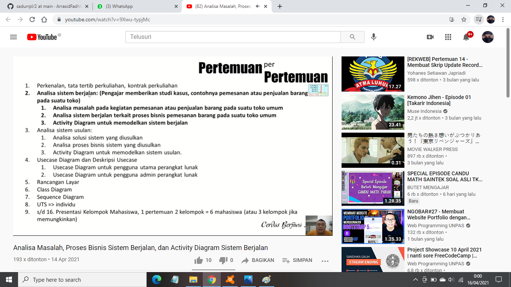
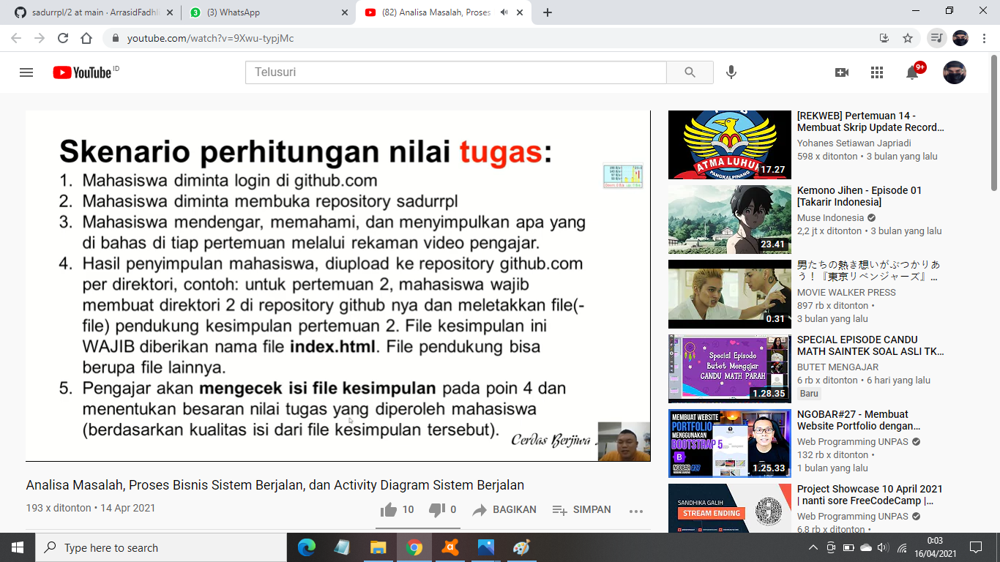

Nim : 1811500094
Nama : Ar'rasid Fadhli
Kelompok : TI6J
Hasil saya menyudur dari penjelasan divideo pada pertemuan ke 2:
- Perhitungan nilai kehadiran untuk setiap pertemuan cukup dengan membuat file index.html di setiap direktori pada repisotary github yang ditandai dengan angka,
contoh nama folder (2) untuk pertemuan ke 2 ,dst.
- Perhitungan besaran nilai tugas dilihat berdasarkan kualitas konten file index.html di setiap pertemuan yang disadur atau berdasarkan kualitas isi dari file kesimpulan tersebut.
- Analisa masalah,kemudian dilanjutkan dengan proses menganalisa sistem berjalan atau analisis sistem berjalan yang berisi SOP.



- Membuat Activity Diagram